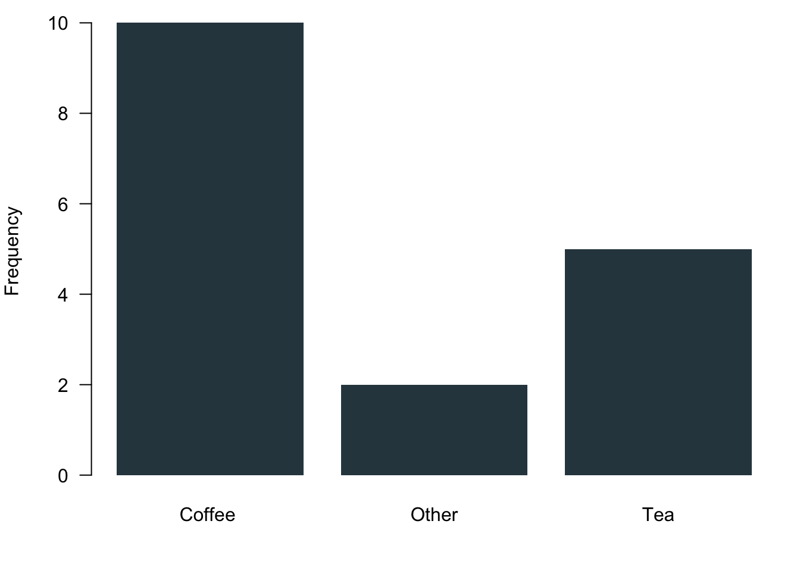

Chapter 1 Tools for Working with Data
This week we will get to know the basic tools we need.
1.1 What Is In a Data Spreadsheet?
When we work with data, the first step is always to get an overview of the data—be it in academia, for a company or in government. The whole first part of this module is dedicated to teaching you how to understand your data in a quick and efficient way.
We will learn a couple of important things.
- How to access data.
- How to get a quick overview over the data.
- How to describe data and extract their core characteristics.
- How to communicate and visualise results.
- How to manage everything efficiently.
To give you an idea how and why even these basic skills matter in real life, I talked to Dr Sebastian Sternberg. He has a degree in politics and works as a data scientist with KPMG at the moment. In the interview, he was so kind to offer us insights into how he is working with data and how relevant data reports are in his daily work.
1.2 Key Concepts
Let as begin with some key definitions.
1.2.1 What is a Statistic?
Statistics summarise large amounts of numerical data. Statistics are really useful if one wants to get a good overview over data.
A statistic is a characteristic of a sample. Imagine we make a number of observations and put in numbers what we see. When we calculate a statistic on this data, the statistic is able to describe the sample we collected. If we collect a different sample, the statistic is very likely to have slightly different values.
The goal of statistical methods is to make inference about a population based on information from a sample of that population. Often, we might be interested in more than just the data at hand. By drawing a sample, we hope to generalise beyond our sample and learn something about the the overall population. For example, by asking a few hundred Welsh voters about their voting intentions we aim at saying something about the voting intention of all voters in Wales.
To estimate parameters, we use statistical methods. Estimating a parameter means that you need to be able to say something about a certain parameter on the basis of a couple of data points that you collected. We will be learning how to use the correct statistics to infer what we believe is the most likely value for a certain parameter. In the voting example, we might be interested to understand what share of voters who would cast their vote for Plaid Cymru for example.
Statistics can separate the probable from the possible. When we collect data, the data can have a range of different values. Of course, not all possible data points are equally likely. The beauty of statistics is that they can be used to tell us which values we can expect to see more often and which ones least often. For example, voters might be able to cast their vote for a whole range of parties—e.g. Labour, Conservatives, Plaid Cymru or the Welsh Nation Party. However, voting for these parties is not necessarily equally likely. It is reasonable to expect that, say, the Conservatives will receive more votes than the Welsh Nation Party.
1.2.2 Some More Definitions
Some more definitions that a really useful for our module. It would not hurt if you could learn them by heart.
Population: The full set of cases about which we want to generalise.
Sample: A subset of the population.
Variable: Logical set of attributes (characteristics) of an object (person, thing, etc.) that can vary across a range.
Parameter: A characteristic of a population; usually unknown.
Descriptive Statistics: Statistics that summarise the distribution of the values of variables in a sample.
Inferential Statistics: The use of statistics to make inferences about a larger population based on data collected from a sample.
1.2.3 Types of Data
| Levels | Example from our Survey | Real World Example | Measurement | Possible Operations |
|---|---|---|---|---|
| Nominal | Tea or coffee? | Gender, religion | Categories | Frequencies |
| Ordinal | Do you like summer? | Social class, attitudes | Categories and ranking | Frequencies and ranking |
| Interval | How many hours do you study? | Age, income | All above and distance | All above and addition and subtraction |
1.2.4 Data in Action
Remember that you were filling out the survey just before term? Overall, 17 of you responded (thanks!). Let us go and take a look at some examples of your data to better understand the different types of data that are out there.
Nominal Data
What do you prefer to drink in the morning? The variable encodes three different answer categories. These categories cannot be ranked, obviously. These are your responses: 
Ordinal Data
How much do you like summer? You were given a scale that ranged from 1 to 5. The answers to this question can be ranked. However, it is not necessarily true that the distances between the answer categories is always the same. Now look at your responses: Here comes the sun!


1.3 Meet: R
Now that we have a bit of an overview how data can look like, let us take a look at the main tool that we will use to manage, analyse and visualise data. We will use a programming language for this module that is called R. It is free and open source, so you can install it easily on your computers. It is also very powerful which means that all the effort that you are investing in these 10 weeks of the term to learn it will heavily pay-off when you are analysing data in the future—be it for research or in any other professional context. And ‘paying-off’ is meant quite literally here. R is a really valuable skill set to have on your CV and is certain to boost your employability quite a bit.
If you want to know more about R, where its coming from and how it all developed, check the Wikipedia Page as a start. Also, feel free to go wild on the homepage of the R Project itself or in any other of your favourite corners of the internet. Beware: The rabbit hole is quite deep. #nerdalert
1.3.1 Install R
Installing R is pretty straightforward: Go and visit the homepage of the The Comprehensive R Archive Network where you can find the latest version of R. At the top of the page, you can chose between your operating system:
1.3.2 Install R Studio
Now that you have installed the programming language, let’s go and get a nice interface that actually helps us get our work down. R-Studio is a programme that makes it much more easy to write and execute R code. Go and get the free R-Studio desktop version. Install the version that suits your operating system.
Nota bene: Make sure you first install R and then R-Studio.
1.3.3 How to Work with R
Here is a quick video in which I show you around. You can also take a look at Chapter 2 in Fogarty (2019) for a lot of helpful details.
1.3.4 First Steps in R
Now that you know how R-Studio looks like and how to use it, let’s go and try it out.
As you saw, in the console tab you can run commands directly. But it is better practice to type them in an R script and send them. Every line of the text editor can be sent using Str + Enter in Windows and Cmd + Enter in MacOS.
Objects
R can keep several objects in memory at the same time. To distinguish them, object have names. Objects are assigned with an arrow like this: <-
Let us assign some values to objects.
a <- 5
b <- 6
c <- a * bObjects can be called using their name. Here on this homepage, you will see a second grey block that will give you the output. If you type all up in R Studio, you will find all R related output in the console.
a## [1] 5b## [1] 6c## [1] 30We can combine several values with the function c(). Functions are really useful. There are basically three elements to a function.
* First of call, they have a name—here in this case it is the letter c which stands for concatenate.
* Then, functions always need one more more inputs. A function receives its inputs in the brackets ().
* If you call a function and provide it with its correct inputs, it will do its thing and return the output that you asked for.
a <- c(1,2,3)
aThe object a is not a scalar any more. It is now a vector that has three elements to it, the numbers 1, 2 and 3.
You can of course also assign more than just numbers. We can assign strings—here a couple of three digit country codes.
cntry <- c("BRA", "GER", "FRA", "NLD")
cntry## [1] "BRA" "GER" "FRA" "NLD"If you want to see all the objects that we have in the workspace so far, try the function ls().
ls()## [1] "a" "b" "c" "cntry" "dat21" "dat22"You want to remove an object? Then use the function rm() like so.
rm(cntry)See, the object cntry is not in the workspace any more.
ls()## [1] "a" "b" "c" "dat21" "dat22"R Data Types
In R, there can be different types of objects. Some can only take specific types of data.
- Scalar: numbers, characters, logical values
- Vector: sets of scalars
- Matrix: two-dimensional set of scalars of same type
- Data frame: Collections of vectors of (possibly) different types but with same length
Let us begin from scratch with am empty workspace. To delete everything, we will nest two of the functions above.
rm(list=ls())First we assign some scalars.
# scalar
a <- 43
b <- a + 7
a## [1] 43b## [1] 50And here we go with some vectors.
x <- c(a,b,a,b)
y <- x + 10
cntry <- c('Brasil', 'Canada', 'China', 'Singapore')
x## [1] 43 50 43 50y## [1] 53 60 53 60cntry## [1] "Brasil" "Canada" "China" "Singapore"Something interesting just happened here: You see the object x which is a vector? R added 10 to each of the scalars in x when calculating y. In programming you call this broadcasting. Pretty nifty!
Next, we build a matrix, for example by binding two columns with the function cbind() or two rows with the function rbind().
z <-cbind(x,y)
z2 <-rbind(x,y)
z## x y
## [1,] 43 53
## [2,] 50 60
## [3,] 43 53
## [4,] 50 60z2## [,1] [,2] [,3] [,4]
## x 43 50 43 50
## y 53 60 53 60This is how a data frame looks like. It accepts vectors with any value. Data frames are quite similar to spreadsheets, for example in Excel or LibreOffice.
dat1 <- data.frame(cntry, z)
dat1## cntry x y
## 1 Brasil 43 53
## 2 Canada 50 60
## 3 China 43 53
## 4 Singapore 50 601.3.4.1 Selecting Elements
Finally, we will learn how to select elements from objects. We will begin with vectors.
a <- c(1,2,3,4,5)
b <- a + 10We can select elements in R with [ ].
a## [1] 1 2 3 4 5a[2]## [1] 2a[2:4]## [1] 2 3 4Like in many other programming languages, the colon : expresses a range. Here we select all values in the range from the second to the fourth entry.
We can also select elements from a matrix. The , helps to distinguish between the two dimensions. The selection m[1,1] will return the first element of the first column. In a similar vein, the selection m[3,2] will return the third element of the second column.
m <- cbind(a,b)
m[1,1]## a
## 1m[3,2]## b
## 13Finally, we select elements from a data frame. We create a variable ‘name’ with the names of Mark, Luise and Peter. The variable ‘bike’ contains their bikes: Mountainbike, Single Speed and Racing Bike. We capture the hours per week they ride on it: 4, 7, 8 and finally we bring all variables together in a common data frame dat2.
name <- c('Mark', 'Luise', 'Peter')
bike <- c('Mountainbike', 'Single_Speed', 'Racing_Bike')
hours <- c(4,7,8)
dat2 <- data.frame(name, bike, hours)In data frames, you can select elements with the operator $ and the name of the variable
dat2$bike## [1] "Mountainbike" "Single_Speed" "Racing_Bike"You can of course still use the positions, too!
dat2[,2] # gives you all entries for the second column## [1] "Mountainbike" "Single_Speed" "Racing_Bike"dat2[1,2] # gives you the first entry for the second column## [1] "Mountainbike"Since just selecting might not always be enough, R allows us to select elements based on conditions.
R comes with everything formal logic requires.
- is equal
== - is not
!= - smaller
< - larger
> - smaller equal
<= - larger equal
=>
You can build more complex queries via
- AND
& - OR
|
Let’s go:
x <- c(1,56,23,89,-3,5)
y <- c(24,78,32,27,8,1)
x[x >20] # greater as 20## [1] 56 23 89x[x >20 & x !=89] # greater as 20 and unequal 89## [1] 56 23x[x>0 | x==-3] # x where x greater 0 oder x=-3## [1] 1 56 23 89 -3 5y[x==1] # y where x=1## [1] 241.4 Readings for This Week
Please read chapter 2 and chapter 3 in (Fogarty 2019).
This is where we end for this week. I am looking forward to meeting you in the workshops on Tuesday 3.10pm-5pm in Tower/0.03!